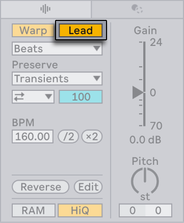
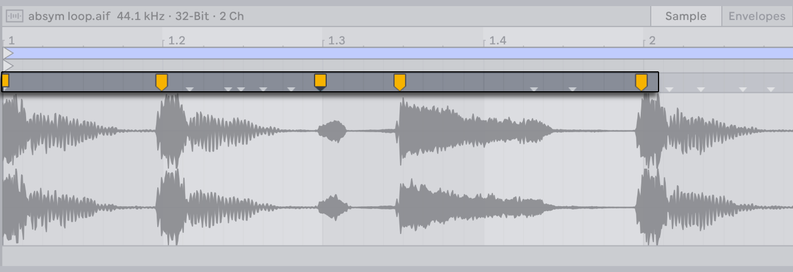
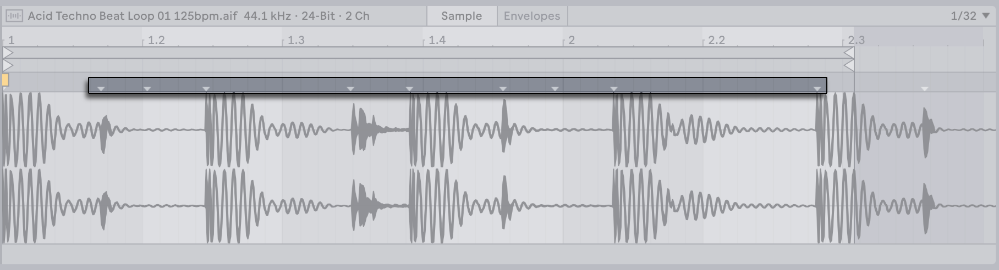
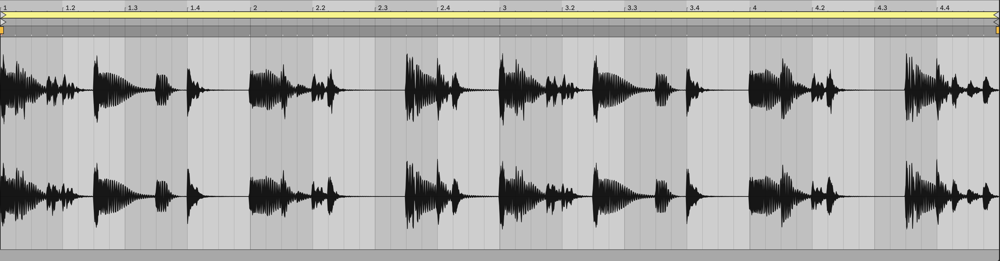
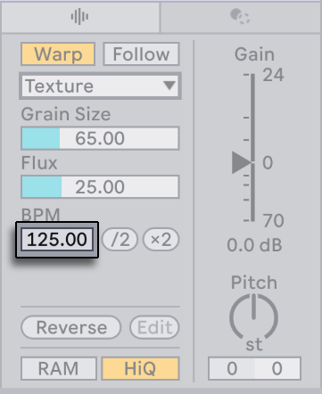
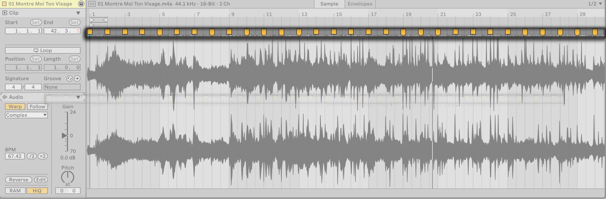
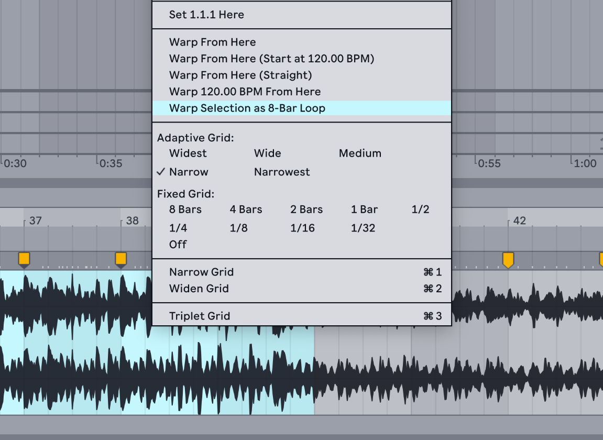
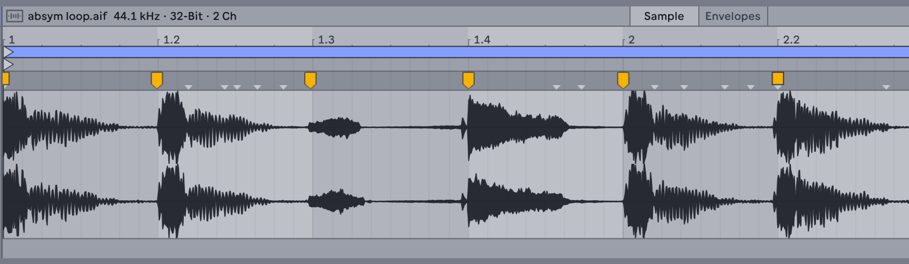

9. Audio Clips, Tempo, and Warping
Audio in Live can be creatively manipulated and stretched in various ways. The process of adjusting the timing and rhythm of audio clips is referred to as warping. Warping lets you treat audio as though it were elastic, enabling seamless time-stretching and tempo synchronization.
Audio clips can be warped using various Warp Modes, allowing you to change the timing of a clip without altering its pitch, or vice versa. Warping can also be used to mimic the behavior of analog tape by adjusting both the pitch and timing simultaneously. Additionally, warping lets you easily mix and match audio clips with varying BPMs.
9.1 Tempo
9.1.1 Setting the Tempo

The Control Bar’s tempo field lets you adjust the playback tempo of your Live Set. You can even automate the tempo to create smooth or sudden tempo changes along the song timeline.
The tempo field displays values for both the coarse tempo in BPM and the fine tempo in hundredths of a BPM. These values can be key or MIDI mapped individually, which is useful for precise tempo changes during live performances.
Additionally, there are several ways to sync the tempo between Live and external sources: you can set up hardware to follow along with Live’s tempo, or vice versa, using MIDI Clock or Link, or set up Live’s tempo to sync with an external audio source using Tempo Follower. Please refer to the Synchronizing with Link, Tempo Follower, and MIDI chapter for more details.
9.1.2 Tapping the Tempo

Apart from setting a tempo using numeric values, you can also use the Tap Tempo button to set the tempo with mouse clicks or computer key taps.
You can click the Tap Tempo button once every beat to have the tempo of the Live Set follow the tempo of your clicking.
To use a computer key to set the tempo instead of clicks, you can map a key to the Tap Tempo button using Key Map Mode:
- Click the Key switch in the Control Bar to enable Key Map Mode.
- Select the Tap Tempo button.
- Press the key on your keyboard that you want to use for tapping.
- Click the Key switch again to leave Key Map Mode.
You can now use the mapped key for tapping the tempo.

Alternatively, you can assign the Tap Tempo button to a MIDI note or controller, such as a footswitch pedal, using MIDI Map Mode.
Live will respond to tap tempo changes immediately; however, the more you tap, the more accurate the detected tempo result will be.
If the Start Playback with Tap Tempo option is enabled in the Record, Warp & Launch Settings, you can also use tapping to trigger playback. When using a 4/4 time signature, it takes four taps to start song playback at the tapped tempo.
When using tapping to start transport, the playback position of any apps that are connected via Link will be synced automatically. This ensures that those apps remain tempo-synced and correctly aligned within the current musical phrase.
9.1.3 Nudging the Tempo

While Live can be easily synchronized via Link or to external MIDI devices, you may sometimes need to align a Set with external sources that aren’t locked to a single tempo, such as live musicians or turntables. As long as your Set’s tempo roughly matches the external source, you can use the Phase Nudge Up/Down buttons to temporarily speed up or slow down Live’s playback to match any tempo changes. As with the Tap Tempo button, the Phase Nudge buttons can be key or MIDI mapped for hands-on control.
9.1.4 Clip Tempo Followers and Leaders
By default, warped clips follow the Set’s tempo; however, clips in the Arrangement View can be set as tempo leaders via the Lead/Follow toggle in the Clip View’s Audio Utilities panel.

When a clip is set to Lead, the Set plays back at the tempo determined by the clip’s Warp Markers. This lets you sync the Set to the tempo of leader clips, which will therefore be played as if they were unwarped. Additionally, the tempo field in the Control Bar is deactivated.

Any number of clips can be set as tempo leaders, but only one clip at a time can actually determine the tempo. When multiple clips on different tracks are leaders, the tempo of the currently playing clip on the bottom-most track will take precedence.
Tempo automation is automatically created to track the changes between the clips’ tempos and the Set’s tempo. This automation is visible in the Main track but is not editable. When leader clips are rearranged in the Arrangement, the resulting automation is also moved. To keep and edit the automation changes, you can use the Unfollow Tempo Automation option in the tempo field’s context menu. This will switch all leader clips to followers, and the automation in the Main track will become editable.

Automation from clip tempo leaders will override the tempo from any audio input being synced via Tempo Follower.
Note that when Live’s EXT switch is enabled, the Lead/Follow toggle is deactivated.
9.2 Warping
Live’s ability to play any sample in sync with a chosen tempo is an important and useful feature. Warping allows for seamless beat matching, rhythmic experimentation, and sound design, as well as track synchronization during playback and live performances.
The warping properties for audio clips are located in the Clip View’s Audio Utilities panel. You can double-click on an audio clip in the Session or Arrangement View to open the Clip View.

The Warp switch toggles warping on or off for an audio clip.
When the Warp switch is off, the sample plays at its original tempo, unaffected by the Set’s current tempo. This is useful for non-rhythmic samples, such as percussion one shots, textures, sound effects, and spoken word, for example.
You can turn the Warp switch on to synchronize rhythmically structured samples, such as loops or entire songs, with the Set’s tempo.
9.2.1 Warping Options in Settings
In addition to using the Warp switch to enable warping in individual clips, you can also configure the warping behavior for samples when they are loaded via the Record, Warp & Launch Settings. When a sample is first imported, Live will decide whether it is short or long, and will then apply one of the options described below.
The Loop/Warp Short Samples option lets you choose the default warping state for short samples:
- Unwarped One Shot - Samples will not be warped when loaded.
- Warped One Shot - Samples will be warped based on the default Warp Mode but not looped.
- Warped Loop - Samples will be warped and looped.
- Auto - Live will automatically apply one of the above options based on what would work best for the specific sample. This option is selected by default.
The Auto-Warp Long Samples option you choose whether long samples are automatically warped when loaded or not. This option is enabled by default. A Warp Marker will be added to the first beat for each bar once the sample is auto-warped. If this option is switched off, long samples will be unwarped when they are added to tracks.
The Default Warp Mode option lets you set which Warp Mode is automatically applied to samples when they are warped. The Warp Mode defines the algorithm used for time-stretching the audio, which affects the clip’s sound. Beats mode is initially set as the default Warp Mode.
9.2.2 Importing Samples
You can drag samples into a Set from folders on your computer, or you can use the Import Audio File… command in the Create menu when an audio track is selected to import MP3, AAC, Ogg Vorbis, Ogg FLAC, or FLAC files. When using this command, files are added at the insert marker in the Arrangement View or inserted into the selected clip slot in the Session View.
When a file is imported into Live for the first time, it is analyzed and cannot be played or edited until the analysis process is complete. Once analyzed, the sample will be accessible in the Sample Editor, and in most cases, synced with the Set’s tempo.
9.2.3 Warp Markers
Warp Markers let you lock a specific point in a sample, such as a transient, to a particular place in the timeline. You can use markers to create a realistic map of the audio’s timing or to alter its rhythm. When a sample is first imported, some initial Warp Markers are populated; however, you can manually add any number of markers as needed.
Double-click anywhere in the upper half of the Sample Editor to add a Warp Marker at that location. You can also use the shortcut CtrlI (Win) / CmdI (Mac), which will place a Warp Marker at the insert marker. Markers can be moved with the arrow keys or dragged to different points in time as needed.

When a Warp Marker is selected, you can hold Shift to drag and move the waveform; this lets you finely adjust the starting point of the audio under the marker.
To delete Warp Markers you can double-click them, or select the corresponding time in the Sample Editor and press the Backspace (Win) or Delete (Mac) key.
If you want the Sample Editor to scroll during playback while you work with clips, you can enable the Follow switch in the Control Bar. Note that Follow will pause if you make an edit in the Sample Editor. You can launch playback or click in the Arrangement or clip scrub area to restart Follow.

9.2.3.1 Transients and Pseudo-Warp Markers
When you first load a sample into a track, Live automatically analyzes the audio and finds its transients. These are amplitude peaks that indicate where notes or beats begin. Transients are usually good places to put Warp Markers.
Transients are represented by small gray markers at the top of the Sample Editor.

You can manually create or delete transients via the corresponding commands in the Create menu, or by using the shortcuts CtrlShiftI (Win) / CmdShiftI (Mac) and CtrlShiftBackspace (Win) / CmdShiftDelete (Mac). To remove all manually created transients, use the Reset Transients option in the Sample Editor’s context menu.
To create Warp Markers for all transients in a time selection, use the Insert Warp Markers command in the Create menu or use the shortcut CtrlI (Win) / CmdI (Mac). If there are no transients within the selected area, Warp Markers will be created at the start and end of the selection.
Pseudo-Warp Markers appear when you hover over transient markers. They look like regular Warp Markers but are gray instead of yellow. Double-clicking or dragging a pseudo-marker turns it into an actual Warp Marker. If there are no Warp Markers after the newly created marker, the clip’s tempo will also change. Holding the Ctrl (Win) / Cmd (Mac) modifier while creating a Warp Marker from a pseudo-marker also creates Warp Markers at the adjacent transients. You can hold Shift and drag a pseudo-marker to move the transient to a new location in the Sample Editor.
9.2.3.2 Saving Warp Markers with a Sample File
Warp Markers are automatically saved with the Live Set; however, you can also save them with the sample file itself, so that they appear in the Sample Editor anytime you drag the file into a track. To do so, click the Save button in the clip’s title bar. Note that it is only possible to save default clip settings for your own samples, and not for any of Live’s Core Library or Pack content.
When a sample is saved with Warp Markers, Auto-Warp will have no effect. However, you can still manually initiate auto-warping using any of the Warp From… context menu options.
9.2.4 Warping Short Samples
The following sections illustrate how warping can be used to sync different kinds of short samples with a Set’s tempo. These scenarios assume that the Loop/Warp Short Samples option in the Record, Warp & Launch Settings is enabled so that newly added samples are automatically warped when added to a Set, which is the default behavior.
9.2.4.1 Even-Length Loops
When you import a sample, Live assumes that it contains a well-cut musical loop of 1, 2, 4, 8, or 16 bars in length, and sets the tempo accordingly. Additionally, two Warp Markers are created: one at the start of the sample and one at the end.

The sample’s estimated tempo is shown in the BPM field of the Audio Utilities panel. If you know the exact BPM, you can type it into the field. If you’re not sure of the precise tempo, you can hold Shift while dragging in the slider to adjust the BPM in fine increments. You can also hold Shift and drag from the clip’s edge in Arrangement View to stretch or compress the clip’s tempo.

Sometimes the estimation of the original tempo is incorrect, and the BPM field may show a tempo that is either twice as fast or half as slow. You can correct this by using the ×2 and ÷2 buttons to double or halve the tempo, respectively.
9.2.4.2 Odd-Length Loops
Samples that have an odd number of bars will play out of sync as Live will initially assume that the loop contains an even number of bars due to the default 4/4 time signature setting.
For synced playback, a Warp Marker at the end of the sample needs to be placed at the beginning of an even bar, for example, bar eight in a nine-bar loop. To fix this, simply add a marker to the correct bar.
Additionally, Live may assume that some loops with odd bars are longer or shorter than they actually are, e.g., a nine-bar loop may be mistaken for an eight-bar loop. In this case, the last bar may not be visible initially. To fix this, you can drag a Warp Marker at the end of the sample toward the right until the eighth bar becomes visible.
9.2.4.3 Uneven-Length Loops
Samples that have not been edited for seamless looping or have no distinct beat pattern will also play out of sync.
You can correct this by moving the insert marker to the first downbeat in the sample and then using the Set 1.1.1 Here context menu option to place a Warp Marker there.

Once the first Warp Marker is set, you can then use the Warp From Here context menu option. To eliminate extra silence at the end of the loop, you can place a Warp Marker before the silent portion of the sample.
9.2.4.4 Multi-Clip Warping
When you select multiple clips that are of the same length and then add or adjust Warp Markers to one of them, those changes will automatically apply to all the selected clips. This feature is particularly useful when you have several clips with the same rhythm and want to alter the timing uniformly. For example, if you have a recorded multitrack performance and want to correct any timing issues across all tracks.
9.2.5 Auto-Warping Long Samples
The following section illustrates how auto-warping can be used to sync longer samples or entire songs with a Set’s tempo. These scenarios assume that the Auto-Warp Long Samples option in the Record, Warp & Launch Settings is enabled so that newly added samples are automatically warped when added to a Set, which is the default behavior.

9.2.5.1 Adjusting Auto-Warp Results
The Auto-Warp algorithm usually estimates the audio clip’s tempo correctly, ensuring that it syncs perfectly with the Set’s tempo. However, you can adjust the auto-warped results manually if they are not what you expected.
When adjusting Warp Markers for longer samples, we suggest activating the metronome in the Control Bar, which can provide a steady tempo reference.
In some cases Auto-Warp guesses the tempo correctly but gets the downbeat wrong. To fix this, you can use one of the following methods:
- Hold Shift while dragging from a Warp Marker to adjust the position of the waveform under the marker.
- Move the insert marker to the downbeat and use the context menu’s Set 1.1.1 Here command to move the start marker to that location.
- Zoom in and create a Warp Marker on the downbeat, then drag the marker to the beginning of the first bar in the timeline.

If you have a sample that has been edited for seamless looping, you can easily adjust the Auto-Warp results using the Warp Sample as… command in the Sample Editor’s context menu. The command will display a suggested loop length that fits the Set’s tempo.

You can also use Auto-Warp for a specific section of a sample. For example, you can select and warp a breakbeat from a longer song. To do so, select time in the Sample Editor by dragging over the portion of the sample you want to isolate. Then use the Warp Selection as… command in the context menu. Auto-Warp sets what it assumes is the most fitting loop length, adds start and end loop markers to match, and then warps the selection so that it fills the loop.

For certain samples, you may want more precise control of the Auto-Warp results. The best way to go about this is to warp the audio in sections, working from left to right. You can set Warp Markers at the start and end of each correctly warped section to pin them into place. Various shortcuts for the Sample Editor can help make this process a bit faster. For example, you can hold down the Ctrl (Win) / Cmd (Mac) modifier to select multiple Warp Markers and then move them together.
In the Sample Editor’s context menu, there are several Warp From Here… commands that provide multiple ways of resetting Warp Markers to the right of a grid division or Warp Marker, leaving any markers to the left unchanged. These commands can be used at any point in the timeline, including at the start marker.
- Warp From Here runs the Auto-Warp algorithm for the audio to the right of the selected marker. If no marker is selected, one will be added at the specified point on the grid.
- Warp From Here (Start At …) uses the tempo of the Set as a baseline for auto-warping. If you want to first update the Set’s tempo to match the clip’s BPM, deactivate warping for the clip so that it plays back at its original speed. Then use the Tap Tempo button in the Control Bar to match the tempo of the clip to the Set. After setting the tempo, re-enable warping for the clip and use the Warp From Here (Start At …) command to use your tapped tempo as a reference.
- Warp From Here (Straight) works best for samples that have no tempo variations. A single Warp Marker will be set at the starting point based on the estimated original BPM of the sample.
- Warp … BPM From Here will also set a single Warp Marker at the starting point, but in this case, the clip is assumed to have the same tempo as the Set. This command is useful if you already know the precise BPM of the sample and can type it into the Control Bar’s tempo field before warping.
9.2.6 Manipulating Grooves
While Warp Markers can be used to accurately sync the musical timing in a sample, they can also be used to deliberately alter the rhythm for creative effects.
For example, if you notice that a transient in a percussive sample comes late, simply pin a Warp Marker to it and then drag the marker to align it with the correct beat. You may want to pin the adjacent transients as well, to avoid affecting neighboring regions in the sample.

Altering a sample’s natural rhythm using Warp Markers is an interesting creative technique, particularly when used together with grooves.
9.2.7 Quantizing Audio
In addition to using Warp Markers to time-stretch a sample, you can also automatically snap a waveform to the grid using quantization. Quantization aligns the audio by moving the nearest transient to the closest grid line.
To quantize audio, click anywhere in the Sample Editor to bring it into focus, and then use the Quantize command from the Edit menu or the shortcut CtrlU (Win) / CmdU (Mac). These options align the audio based on the current quantization settings, which can be adjusted via the Quantize panel.

Audio can be quantized to match the current grid size or a specific grid division, including triplets. To achieve a more subtle result, use the Amount control to adjust the level of applied quantization. This control shifts the Warp Markers by a percentage of the chosen quantization value.
9.3 Warp Modes
Live’s Warp Modes use different granular synthesis techniques to manipulate time by repeating or omitting segments of the audio; these segments are referred to as grains. Each Warp Mode has a specific way of selecting, overlapping, and crossfading grains, which affects how the audio is stretched or compressed. Because of this, some Warp Modes are best suited for certain kinds of audio material, depending on the original tonal characteristics.
While warping can be used for precise time-stretching, there are also many creative ways to alter a sample’s rhythm for more experimental results.
9.3.1 Beats Mode
Beats mode works best for audio that has a dominant rhythm, such as drum loops and most electronic dance music. In this mode, the granulation process is optimized to preserve the transients in the audio.
The Preserve control lets you preserve divisions in the sample; these divisions define the boundaries between portions of audio. When warping percussive samples, choose Transients for the most accurate results. This setting uses the positions of the audio’s transients to determine the warping behavior. To preserve specific beat divisions regardless of where the transients are located, choose one of the grid division options. For some interesting rhythmic artifacts, try using large grid divisions in conjunction with pitch transposition.
The Transient Loop Mode chooser sets the looping properties for the audio’s transients:
 Loop Off — Each segment of audio between transients plays to its end and then stops. Any remaining time between the end of a segment and the next transient will be silent.
Loop Off — Each segment of audio between transients plays to its end and then stops. Any remaining time between the end of a segment and the next transient will be silent.
 Loop Forward — Each segment of audio between transients plays to its end, then playback jumps to a zero-crossing near the middle of the segment and continues looping until the next transient occurs.
Loop Forward — Each segment of audio between transients plays to its end, then playback jumps to a zero-crossing near the middle of the segment and continues looping until the next transient occurs.
Loop Back-and-Forth — Each segment of audio between transients plays to its end, then playback reverses until it reaches a zero-crossing near the middle of the segment, and proceeds again towards the end of the segment. This pattern continues until the next transient occurs. When combined with preserved transients, this mode can often result in a high-quality sound, especially at slower tempos.
The Transient Envelope control determines the volume fade between each audio segment. When set to 100, no fade is applied, while at 0, longer fades are added, causing each segment to decay very quickly. Higher envelope times can help to smooth out any clicks between segments; lower envelope times can be used to create rhythmic gating effects.
9.3.2 Tones Mode
Tones mode is useful for stretching audio that has a distinct pitch, such as vocals, monophonic instruments, and basslines.
Grain Size lets you roughly adjust the average size of the grains used. The actual grain size is determined by the clarity of pitch changes in the audio. Small grain sizes work best for audio that has distinct pitch variations. Using larger grain sizes can help prevent unwanted noise but may also cause audible artifacts.
9.3.3 Texture Mode
Texture mode works well for sounds that don’t have a clear melody or pitch, such as polyphonic orchestral music, atmospheric pads, noise, or drones. It’s also great for sound design and experimental audio manipulation.
The Grain Size control determines the grain size used, but unlike in Tones mode, the audio’s tonal characteristics are not taken into consideration when the grain size is adjusted.
Fluctuation introduces randomness into how the sample is processed. Higher values result in more random variation.
9.3.4 Re-Pitch Mode
Re-Pitch mode can be used to adjust the sample’s playback rate. This lets you change the pitch of the sample while modifying its tempo, similar to how DJs change the playback speed on turntables, or how old samplers change the pitch of samples when sped up or slowed down. For example, if you double the speed, the pitch goes up by an octave.
In this mode, the sample’s transposition controls are deactivated because changing the playback speed directly affects the pitch.
9.3.5 Complex and Complex Pro Mode
Complex mode is useful for warping audio that contains a combination of beats, melodies, and textures, such as entire songs.
Complex Pro mode uses a variation of the algorithm found in Complex mode, and may offer higher quality results. Like Complex mode, Complex Pro works especially well with polyphonic textures or full songs.
The Formants control determines how the sample’s formants (the resonance frequencies of the tone) are affected when the pitch is transposed. At 100%, the original formants will be preserved, even if the pitch is changed significantly. This helps maintain the original tonal quality. Note that this control has no effect if the sample’s transposition is not changed.
The Envelope control also influences the overall tonal quality. The default setting is 128, which should work well for most samples. For high-pitched samples, lower Envelope values may provide better results, while low-pitched samples may sound better with higher values.
Depending on your setup, the Complex and Complex Pro modes may be more CPU-intensive than the other Warp Modes. To save CPU resources you can freeze or resample tracks that use these modes.